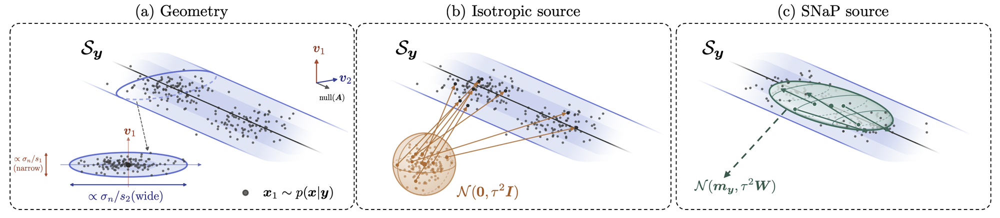
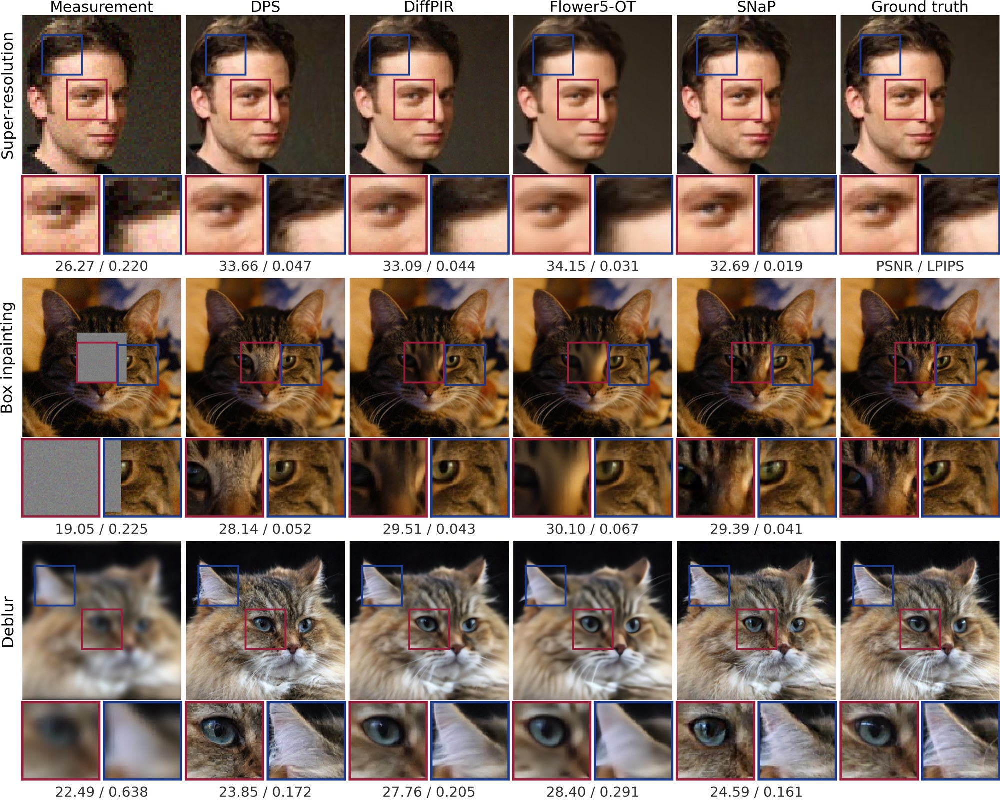
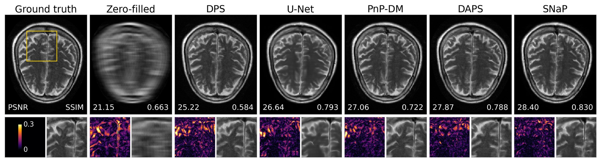
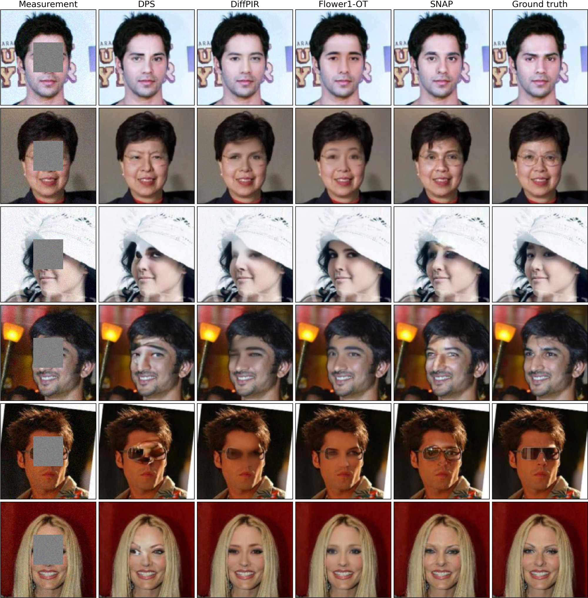
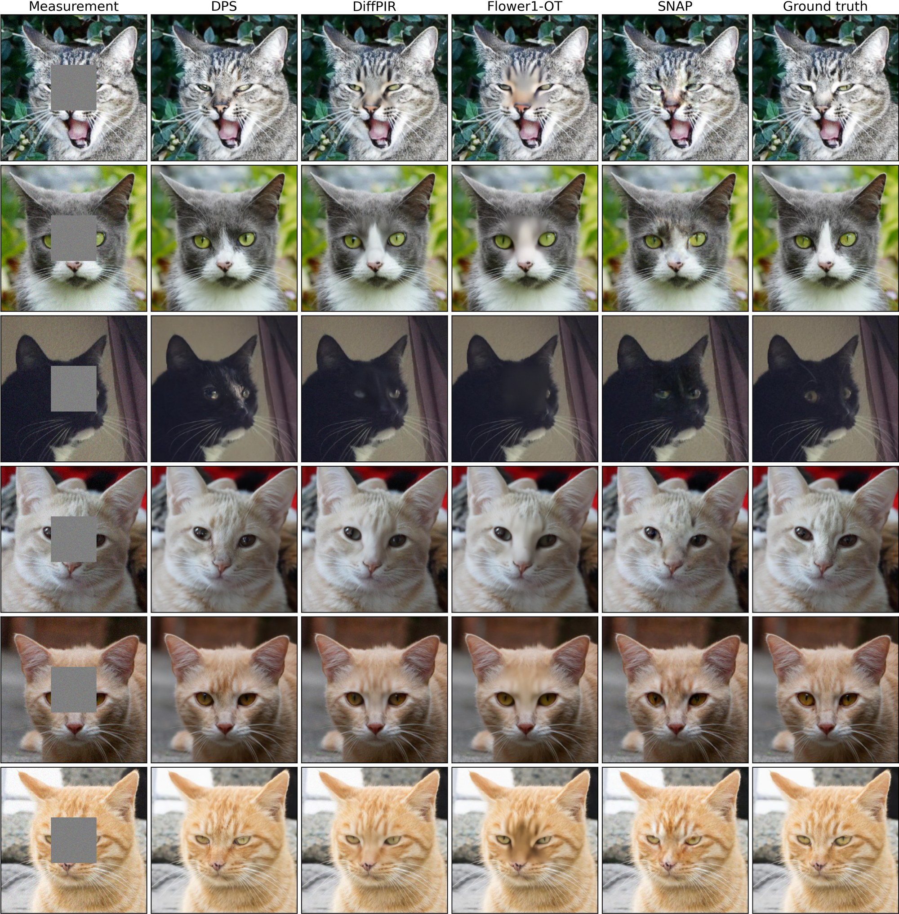
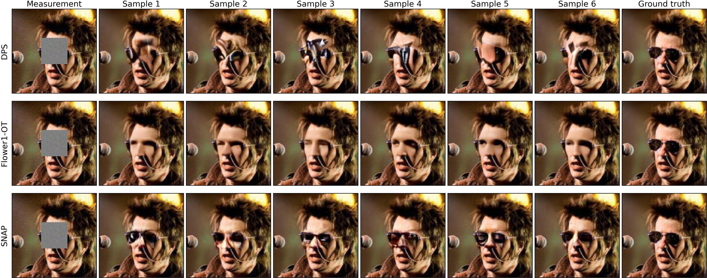
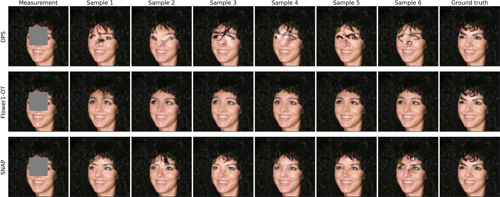
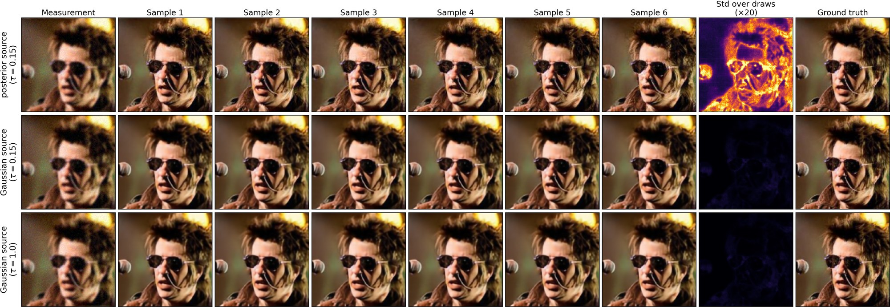
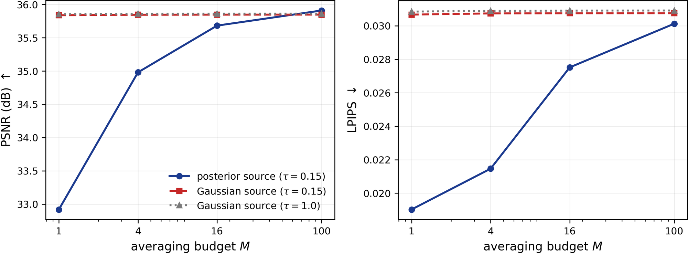

Diffusion and flow-matching models can produce high-quality posterior samples for inverse problems, but typically require tens to thousands of network evaluations per draw. MeanFlow enables one-step generation, yet applying it to inverse problems leaves no intermediate steps at which to enforce measurement consistency. We introduce SNaP, a one-step MeanFlow posterior sampler for linear inverse problems with Gaussian noise. Its central innovation is a measurement-adapted source: a Gaussian distribution whose mean and anisotropic covariance are determined by the measurement operator, observation, and noise level. The source anchors well-measured directions while preserving variation where the measurements are weak or uninformative. We show that the exact conditional flow transports this source to the true posterior. Across natural-image restoration and multi-coil MRI, SNaP produces diverse, high-quality samples with one network evaluation per draw, 30 to 2250× faster than iterative samplers.
Iterative posterior samplers pull toward the measurement $y = Ax_1 + n$ at every step of the trajectory. MeanFlow collapses the trajectory into a single jump $x_1 = x_0 + u(x_0, 0, 1)$, so there is no intermediate state left to correct. The obvious fix—condition the MeanFlow on $y$ and keep the isotropic $\mathcal{N}(0, I)$ source—fails in a specific way: the draws become nearly identical, the sampler degenerates into a point estimator, and averaging them gains nothing (calibration ratio 0.00). SNaP changes where the transport starts instead.

Along the straight path from a source sample $x_0$ to a posterior sample $x_1$, the conditional velocity is $x_1 - x_0$. SNaP keeps the path and the endpoint coupling fixed and designs the source, choosing a family with a linear, measurement-dependent center $x_0 = Ky + \xi$, where $\xi$ has covariance $\Sigma$. The expected displacement splits into a center term and a spread term:
Proposition 1 shows the center term is uniquely minimized by the linear MMSE estimator $K_C = CA^\top(ACA^\top + \sigma_n^2 I)^{-1}$, for any image distribution with covariance $C$. With the isotropic working covariance $C = \tau^2 I$ this is the Tikhonov estimate, and matching the spread to its error covariance gives the source
In the right singular basis of $A$, the source variance along $v_i$ is $\tau^2 w_i$ with $w_i = \sigma_n^2 / (\sigma_n^2 + \tau^2 s_i^2)$: small in well-measured directions, approaching $\sigma_n^2/s_i^2$ when the signal dominates, and equal to $\tau^2$ on $\mathrm{null}(A)$. The Tikhonov center also avoids amplifying noise in weakly measured directions, unlike the least-squares anchor $A^\dagger y$. The working model is used only to build the source; it does not assume the images are Gaussian. As $\sigma_n \to 0$ the source tends to $\mathcal{N}(A^\dagger y, \tau^2 P)$, which recovers the noiseless NullFlow source.
Proposition 2. Let $x_0 \sim q_\tau(\cdot \mid y)$ and $x_1 \sim p(\cdot \mid y)$ be conditionally independent and joined by straight lines. If the posterior has finite second moments and the marginal flow has a terminal limit, the exact one-step map
The source changes the transport, not its destination; the trained network $u_\theta$ approximates $u$, so SNaP samples inherit the guarantee up to that approximation error. A companion result (Lemma 2) shows that the irreducible velocity-regression error—the part no network can remove—is smaller under $q_\tau$ than under any isotropic source $\mathcal{N}(0, \sigma^2 I)$ with $\sigma \ge \tau$.
Sampling $q_\tau$ directly would need $W^{1/2}$. Perturb-and-solve avoids it: with independent $\epsilon \sim \mathcal{N}(0, \tau^2 I)$ and $n' \sim \mathcal{N}(0, \sigma_n^2 I)$,
The solve is elementwise for inpainting and super-resolution, two FFTs for deblurring, and 10–20 conjugate-gradient iterations for multi-coil MRI. The network is trained with the conditional MeanFlow identity (one Jacobian–vector product per step) and the adaptive-weight loss of MeanFlow. At test time each sample is one source draw and one network evaluation; redrawing $(\epsilon, n')$ with $y$ fixed produces conditionally independent samples.
require: y, A, σₙ, τ
λ ← σₙ² / τ²
ε ~ N(0, τ²I), n′ ~ N(0, σₙ²I)
r ← y − Aε − n′
x₀ ← ε + Aᵀ(AAᵀ + λI)⁻¹ r
return x₀
x₀ | y ~ N(mᵧ, τ²W) exactly (Lemma 1);
no square root of W is formed
require: A, σₙ, τ, pratio = 0.5
x₁ ~ p, y ← A x₁ + n
t ~ logit-normal
r ← t w.p. pratio, else r ~ U(0, t)
x₀ ← SampleSource(y, A, σₙ, τ)
zᵣ ← (1−r) x₀ + r x₁, v ← x₁ − x₀
u, dᵣu ← JVP(uθ; (zᵣ, r, t), (v, 1, 0))
utgt ← v + (t − r) sg[dᵣu]
ℓ ← ‖u − utgt‖² / n
θ ← AdamW(θ, ∇θ sg[ω(ℓ)] ℓ)
require: y, A, σₙ, trained uθ, M
for j = 1 … M do
x₀⁽ʲ⁾ ← SampleSource(y, A, σₙ, τ)
u ← uθ(x₀⁽ʲ⁾, 0, 1 | y, σₙ)
x̂₁⁽ʲ⁾ ← x₀⁽ʲ⁾ + u
return {x̂₁⁽ʲ⁾}
M draws = M NFEs, one batched pass;
mean → distortion, spread → uncertainty




Holding the measurement fixed and redrawing only the source noise gives independent samples. Each figure shows six draws for one CelebA box-inpainting measurement from DPS (1000 NFEs per draw), Flower1-OT (100) and SNaP (1). Variation should appear inside the masked box, where the measurement says nothing, and vanish where the pixels are observed.


A SNaP sample costs one network evaluation and one source draw. The source solve with $(AA^\top + \lambda I)^{-1}$ is diagonal or Fourier-diagonal for the natural-image operators and a short conjugate-gradient run for multi-coil MRI, so it adds little to the network call. That makes SNaP 30 to 2250× faster per sample than the iterative samplers on CelebA deblurring and 335 to 563× faster at ×8 MRI acceleration.
NFE and single-batch wall-clock time per posterior sample. Best in each row.
100 test measurements per setting. Natural-image degradations follow PnP-Flow and Flower with $\sigma_n = 0.05$ (0.01 for random inpainting): a $61\times61$ Gaussian blur, $\times2$ (CelebA) or $\times4$ (AFHQ-Cat) strided super-resolution, 70% random inpainting, and a centered $40\times40$ or $80\times80$ box. MRI uses $A = MFS$ with ESPIRiT sensitivities at $\times4$ and $\times8$ Cartesian acceleration. For SNaP we report a single draw ($M = 1$) and the average of $M$ draws, which costs $M$ NFEs.
A single SNaP draw is competitive in LPIPS at one NFE; averaging draws attains the best SSIM on every CelebA task and the best PSNR on three of four. SNaP also reaches the best FID on two of three CelebA operators and the calibration ratio closest to 1 on all three.
100 CelebA test images. Best and second best among all methods (the degraded reference is excluded). – marks a setting where a baseline does not apply. Scroll the table sideways on narrow screens.
100 AFHQ-Cat test images. PnP-Flow and Flower step counts depend on the operator, hence the NFE range. The MSE regressor is omitted on box inpainting, where its output is the blurred conditional mean of the masked region. Best and second best.
PSNR, SSIM and LPIPS do not say whether the spread of the draws is the right size. The calibration ratio $\Delta_{\text{cal}} = V/B$ divides the variance $V$ of the draws by the squared error $B$ of their mean; for an exact posterior sampler the two are equal. Values below 1 mean draws collapsed toward a point estimate, above 1 over-dispersed. It is a second-moment check, not a coverage certificate.
CelebA. Every SNaP entry is a single draw; FID on 2048 reconstructions, $\Delta_{\text{cal}}$ with $M = 100$. Best and second best ($\Delta_{\text{cal}}$ ranked by distance to 1).
100 multi-coil fastMRI brain (AXT2) test slices; PSNR/SSIM on magnitude images. Best and second best among all methods. Among the posterior samplers, SNaP is competitive with a single NFE.
Same network, conditioning and schedule; only the source differs. With either isotropic source the calibration ratio falls to 0.00: the draws are near-identical, the sampler has become a point estimator with a random input, and averaging 100 draws changes nothing. The measurement-adapted source keeps the draws dispersed. Its single-draw advantage is perceptual (LPIPS 0.018 vs. 0.030), and its average overtakes the isotropic sources in PSNR.
CelebA Gaussian deblurring, $\sigma_n = 0.05$.


$\sigma_n$ enters the source in closed form, so a wrong value changes how the source allocates uncertainty rather than breaking the method. A model trained at $\sigma_n = 0.05$ and tested on cleaner measurements (over-estimating the noise by up to 5×) degrades gracefully: PSNR still rises as the measurements get cleaner and LPIPS stays within 0.017–0.020. Under-estimation is not tested.
CelebA Gaussian deblurring; source and model fixed at $\sigma_n = 0.05$.
Proposition 2 says $\tau$ shapes the transport but not its target, so it is a design parameter rather than a modelling choice. Distortion is indistinguishable between $\tau = 0.15$ and $0.5$ at every $M$ and drops about 0.4 dB at $\tau = 1.0$; the relative spread of the draws (5.49%, 5.48%, 5.72%) barely moves. $\tau$ does not need precise tuning.
CelebA Gaussian deblurring, 100 test measurements; $M$ = number of averaged draws.
Composing $u_{r,t}$ over a uniform partition of $[0,1]$ gives $k$-step sampling without retraining. More steps are not monotonically better: every metric peaks at $k = 2$ and declines afterwards, and $k = 8$ is worse than one step for $M \ge 16$. The model is trained to jump source-to-data, so evaluating it at intermediate $(r,t)$ compounds its error. The gain at $k = 2$ is small, so SNaP uses $k = 1$.
CelebA Gaussian deblurring, $\tau = 0.15$.
This work was supported in part by the National Science Foundation under CAREER award CCF-2625643 and award CCF-2622128.
@article{shoushtari2026snap,
title = {SNaP: One-Step Posterior Sampling for Noisy Inverse Problems},
author = {Shoushtari, Shirin and Chandler, Edward P. and Shi, Xiao
and Kamilov, Ulugbek S.},
journal = {arXiv preprint arXiv:2609.34071},
year = {2026}
}